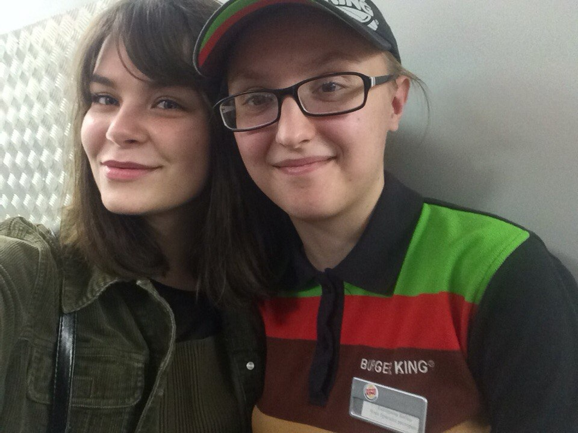
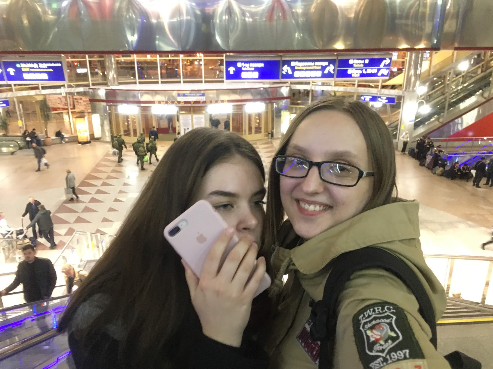
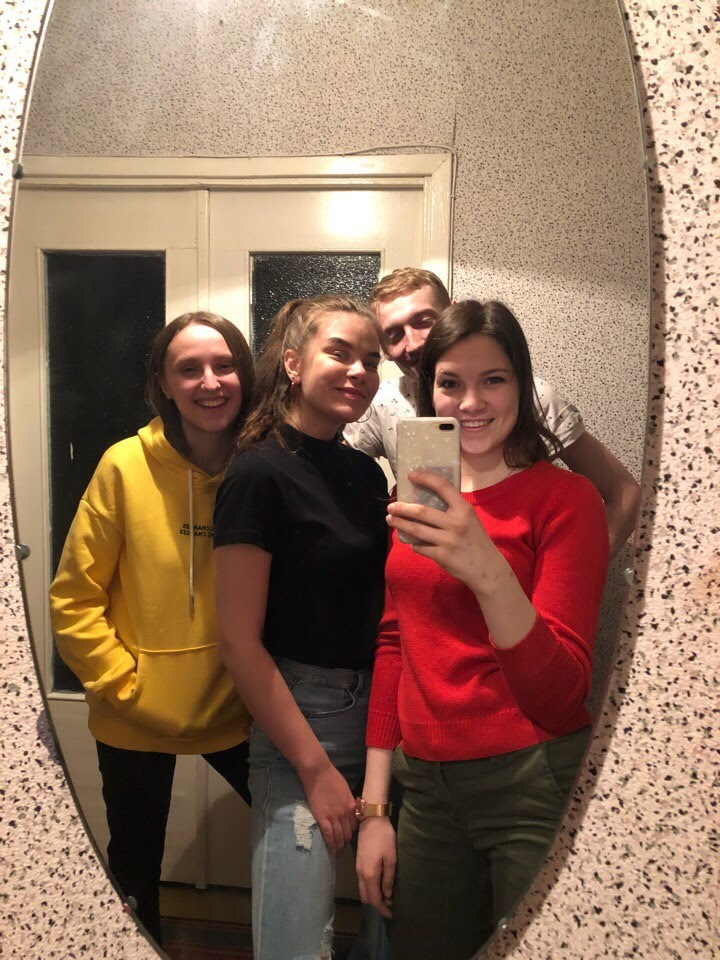
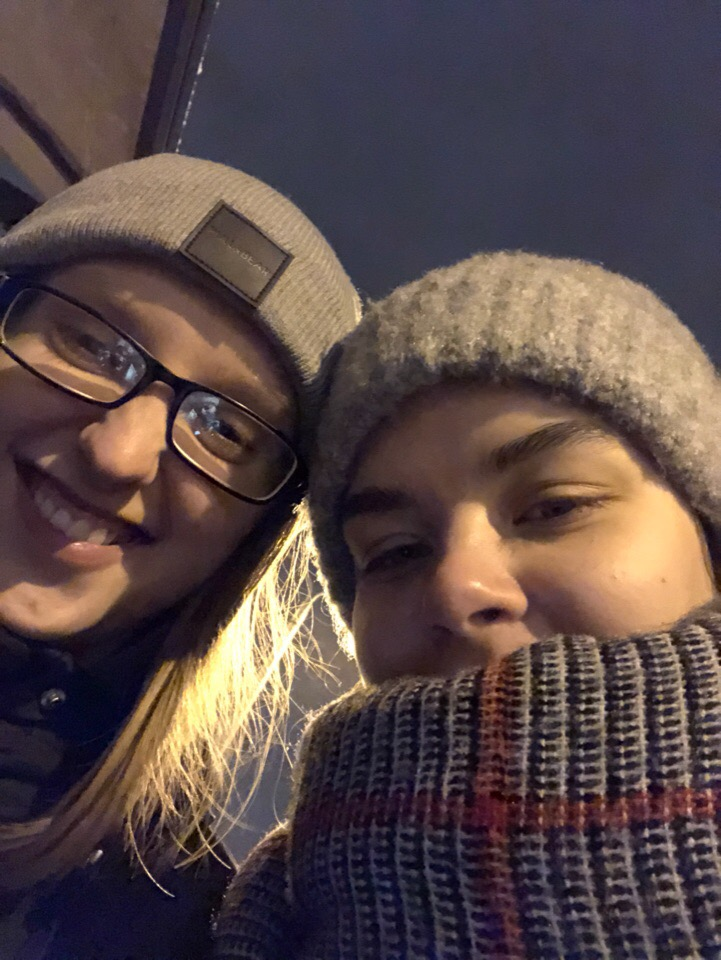
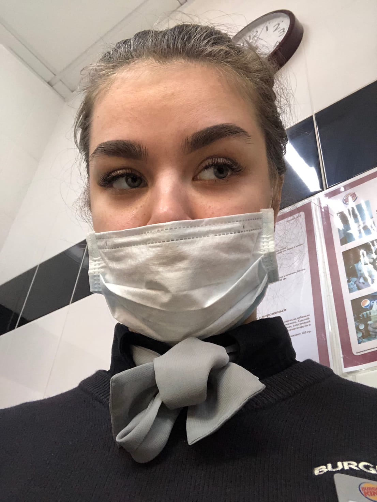
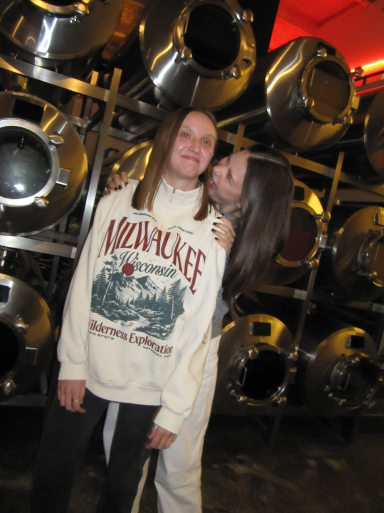

Открой это письмо, чтобы прочитать моё душевное поздравление
Марина, данное поздравление будет больше выглядеть как письмо-откровение, нежели обычное «С днём рождения!».
Ты знаешь, я люблю писать тексты о людях, которые охватывают сразу несколько этапов нашей жизни и воспоминаний. В этом году я решила не делать исключений и пройти наш с тобой путь с самого начала в виде текста.
Не знаю, какое впечатление у тебя сложилось обо мне вначале, но для меня, как ты помнишь, это был тот ещё аттракцион. Приходит такая яркая и активная личность и пытается со мной дружить. Сказать, что я не доверяла данному фактору — не сказать ничего. Я думала, это какая-то глобальная шутка или ты просто очень вежливая и открытая ко всем. Ты была открыта и искала ко мне подход со всех сторон, представляю, как это было утомительно, когда человек на обратной стороне тебя либо избегает, либо выдаёт односложные ответы. Я думала, мы из разных миров, ты думала, как же заставить меня раскрыться.
Честно, память меня подводит, и я не помню, что стало тем решающим фактором, который заставил меня соглашаться на встречи вне работы и забавные переписки в ВК или Телеграмме.
А эти прекрасные первые селфи… Я тебе клянусь, я селфи делать начала только с тобой, до этого я никогда не видела в них смысл. А оказалось, смысл в том, чтобы запечатлеть эмоции и моменты с дорогими тебе людьми — много стоит. Этот урок я усвоила тоже благодаря тебе.


Дальше было только лучше. Тусовки с БКшными ребятами оставляли лишь лучшие эмоции и лучшие нелепые фото с тобой.

Я как вспомню эти времена — и диву даюсь, как это было круто и весело. Естественно, самое веселье там было благодаря тебе, но и ребята никогда не отставали по крутости времяпрепровождения. Факт остаётся фактом: без тебя в эту компашку я бы никогда не смогла влиться и понять, что оказывается, даже если ты в толпе, даже если в каком-то баре, может быть очень весело и уютно. (Кстати, ты была права про эту причёску каре — сущий ужас, ахах).
Потом последовало моё увольнение из БК, а ты осталась. Думала ли я, что общение сойдёт на нет из-за того, что мы больше не работаем вместе? Думать не думала, но в душе я опасалась этого, думала, вне постоянных встреч станет неинтересно со мной (знаю-знаю, самобичевание тогда во мне работало во все стороны, но это в целом прошло, слава богу). Хорошо, что это было не так, и мы всё равно общались на регулярной основе и были рядом друг для друга в любой момент. Все прелести от постоянной поддержки и фразы «я буду тебе говорить правду, даже если она неприятна» я прочувствовала именно тогда и буду до конца жизни тебе благодарна, потому что то ещё было времечко, и не каждый бы всё ещё шёл рядом, как будто это само собой разумеющаяся вещь.
Про моё фиаско с Испанией ты знаешь, наверное, больше всех, потому что то неприятное время в приятной стране чуть не загнало меня в депрессию. Повезло, что я ограничилась лишь парой панических атак (с кем не бывает). И твоё рвение мне помочь и чуть ли не купить билет в Испанию, чтобы меня забрать — это было что-то с чем-то. Я плакать не умею, но мысли о том, что есть в моей жизни хоть кто-то, кто не заставляет меня быть сильной и терпеть этот период, растрогали меня до глубины души.
А моё эпичное возвращение, когда я попросила Сеню позвать тебя выйти в зал, но передача информации прошла неудачно, и ты в одном пальто вылетела не только в зал ожидания, но и пошла в главный зал вокзала искать меня, а я всё это время стояла и улыбалась такому необычайному рвению.
Тот момент навсегда отпечатался у меня в голове, потому что ты заставляешь чувствовать людей свою ценность, как никто другой, ей-богу, у тебя какая-то суперсила в этом плане.

Потом у тебя было продвижение по карьерной лестнице в БК, а я спокойно работала в OZ. До сих пор помню, как мы идём по улице, у меня в руках какие-то бумажки с информацией, которую тебе нужно было сдать, не помню на кого, но ты очень переживала, что не получится и ты что-нибудь да забудешь, в то время как во мне не было ни капли сомнений, что ты сделаешь всё, что нужно, и обескуражишь там всех своих наставников, и они будут в шоке от твоей компетентности и личности.

Потом в какой-то момент в твоей жизни появился Даник (ту переписку, которая началась со слова «Катя, если ты стоишь — то сядь, у меня есть новости», я помню до сих пор). И честно, лучшего мужа для тебя я не могла пожелать, вы дополняете друг друга идеально: где ты можешь быть немного взбалмошная, он рядом более спокойный и гармонирует с тобой. Где он будет переживать и нервничать, т.к. воспринимает всё ближе к сердцу, там ты со своей уверенностью и безграничной поддержкой помогаешь ему держаться. В общем, вы идеальные, и тут слов не подобрать, насколько. Единственный спорный момент — это когда Даник за помощью с кольцом почему-то обратился ко мне, к последнему человеку, к кому следовало обращаться по поводу бижутерии, но мне было приятно, не скрою, пусть от меня и было мало помощи, хахахах.
А дальше жизнь закрутилась, завертелась: твоя свадьба, армия Даника, где ты ни дня не пропускала, чтобы с ним увидеться, и не щадила себя в этом плане. Моё восхищение тобой лишь увеличивалось с каждым годом, потому как я видела, как ты растёшь как личность, как профессионал в своей сфере, как жена для Даника и как подруга для всех нас и меня в частности.
Твои прекрасные дни рождения, где каждый более творческий и интереснее другого. Твой стиль и твоё воображение никогда не перестанут меня удивлять, и я лишь жду, что же будет дальше, потому что с тобой никогда не угадаешь — но в этом и вся прелесть тебя как подруги и человека.
Кто-то скажет «слишком», а я скажу — в самый раз. Другой я тебя бы и не представила. Ты такая, какая есть, и если кому-то это слишком, тот не представляет, что теряет — какой алмаз, какое сокровище в виде человека.
Я знаю, что в последнее время наши встречи сократились, но для меня это никогда не будет фактором, чтобы наша дружба как-то скатилась или стала менее значимой. У каждого своя жизнь, свои мероприятия и нюансы, которые могут препятствовать общению как раньше. Но я считаю, как раньше и быть не может: мы выросли, стали более мудрыми (я надеюсь, что стали, ахах), и дружба перешла на другой уровень, более глубокий, я считаю.
Потому что, чтобы ни произошло, я знаю: ты поддержишь, придёшь, отдашь последний ресурс, чтобы помочь своим близким. И я в ответ всегда поступлю для тебя так же — без вопросов и разбирательств, чтобы тебе ни потребовалось, я на расстоянии одного звонка или сообщения. Я никогда про тебя не забываю, и у меня даже все друзья прикалываются по поводу того, насколько я ценю тебя и дружбу с тобой, потому что им кажется, что наши личности настолько разные, что каким образом мы ещё не устали друг от друга (они не в плохом смысле, не переживай, они знают, как я тебя люблю), но я их быстро затыкаю, потому что ничего они не понимают в нашей связи и в том, как круто с тобой дружить. Ты навеки мой кумир, я навеки твой фанат.
И в целом что я хотела всем этим сказать — лишь то, что я тебя безгранично люблю, ценю и всегда буду рядом, что бы ни произошло и куда бы жизнь нас ни завернула. И я помню обещание, которое я тебе дала когда-то давным-давно: я никуда не уйду, пока не попросишь. И я надеюсь, никогда и не попросишь))))
Я с нетерпением жду, что дальше нам подкинет жизнь и какие ещё воспоминания мы с тобой ещё построим. С нетерпением жду встречи с Вашей малышкой или малышом — этот ребёнок будет навсегда иметь особое место в моём сердечке без разбирательств.
С твоим днём, Марина! Надеюсь, этот год принесёт тебе лишь радостные события, кучу крутых эмоций и ноль проблем.
Люблю тебя до луны и обратно.
